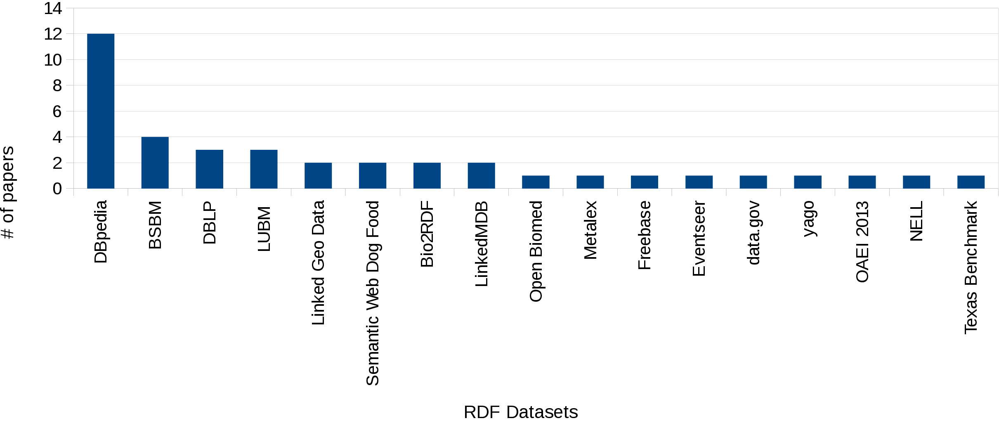

Laurens Rietveld, Wouter Beek,
Stefan Schlobach
http://wouterbeek.github.io
How generalizable is SW research?
17 datasets are used in total
1-6 datasets per article
2 datasets per article on average
Why is Web Scale Linked Data Evaluation Difficult?
- 'Messy' datasets
- Datasets are hard to find
- Inaccessible via a uniform interface

Problem 1: Messy Datasets

http://lodlaundromat.org
LOD Laundromat
- 650k documents, 38 billion cleaned triples
- Gzipped N-Triples/N-quads files
- Triple Pattern Fragment APIs
Problem 2: Datasets are hard to find

lodlaundromat.org/sparql
index.lodlaundromat.org
Structure Descriptions
lodlaundromat.org/sparql- Aggregate Descriptions
- Syntactic Descriptions
- Network Properties
Content Descriptions
index.lodlaundromat.org- Resource → Document
- Namespace → Document
Problem 3: Inaccessibility

https://github.com/LODLaundry/Frank
Frank
- Glue between LOD Laundromat service, Meta-Data and Indexes
- Programming Language Independent: Bash Pipes
Frank
$ ./frank statements --predicate foaf:name | head -n 5
eurostat:void.rdf#Eurostat foaf:name "Eurostat".
author:5ff33...1c4 foaf:name "Dong-Mei Shi".
author:d873s...19b foaf:name "Feng-Xia Ma".
author:fbbcf...54c foaf:name "Ya-Guang Chen".
author:1ec76...f4b foaf:name; "Jian Yu".
(3/3) Accessibility
$ ./frank documents --namespace void --minTriples 1000 \
| ./frank statements --predicate foaf:name \
| head -n 5;
europa:Eurostat foaf:name "Eurostat".
tw:ReviewCommission foaf:name "Review Commission"^^xsd::string.
sw:gianluca-demartini foaf:name "Gianluca Demartini".
sw:mohammad-mannan foaf:name "Mohammad Mannan".
sw:tom-minka foaf:name "Tom Minka".

LOD Lab Demonstration
- RDF Vault
Bazoobandi, Hamid R., et al. "A Compact In-Memory Dictionary for RDF Data." The Semantic Web. Latest Advances and New Domains. Springer International Publishing, 2015. 205-220. - RDF Header Dictionary Triples (HDT)
Fernández, Javier D., et al. "Binary RDF representation for publication and exchange (HDT)." Web Semantics: Science, Services and Agents on the World Wide Web 19, 2013. 22-41. - Linked Data Best Practices
Schmachtenberg, M., et al. "Adoption of the linked data best practices in different topical domains." The Semantic Web–ISWC 2014. Springer International Publishing, 2014. 245-260.
(1/3) RDF Vault
| RDF Vault | LOD Lab |
|---|---|
 |
$ ./frank documents --downloadUri \
--minTriples 1000 --maxTriples 100000 \
| ./runVaultExperimentForFile(2/3) RDF HDT
| RDF HDT (Uniprot) | LOD Lab | |||
|---|---|---|---|---|
| Triples (millions) |
# Docs | Compression Ratio |
# Docs | Compression Ratio |
| 1 | 1 | 3.73% | 179 | 11.23% |
| 5 | 1 | 3.48% | 74 | 4.99% |
| 10 | 1 | 3.27% | 50 | 5.43% |
| 20 | 1 | 3.31% | 17 | 4.15% |
| 30 | 1 | 3.27% | 15 | 5.09% |
| 40 | 1 | 3.26% | 8 | 7.25% |
(2/3) RDF HDT
| Avg. Degree | # Docs | Compression Ratio |
|---|---|---|
| 1-5 | 92 | 21.68% |
| 5-10 | 80 | 6.67% | 10-∞ | 99 | 4.85% |
$ ./frank documents \
--minAvgDegree 5 --maxAvgDegree 10 \
| ./hdtCompressDocument(3/3) Linked Data Best Practices
| Original | LOD Lab | ||||
|---|---|---|---|---|---|
| Prefix | #datasets | %datasets | Prefix | #documents | %documents |
| rdf | 996 | 98.22% | rdf | 639,575 | 98.40% |
| rdfs | 736 | 72.58% | time | 443,222 | 68.19% |
| foaf | 701 | 69.13% | cube | 155,460 | 23.92% |
| dcterm | 568 | 56.01% | sdmxdim | 154,940 | 23.84% |
| owl | 370 | 36.49% | worldbank | 147,362 | 22.67% |
$ ./frank documents --downloadUri
| ./countNamespacesForDocumentConclusion
- Toolkit to scale evaluations to web size
- Showcased on three recent SW Publications
- Relating experiment results to structural properties of datasets
- Our goal: Improving Linked Data Evaluation Best Practices